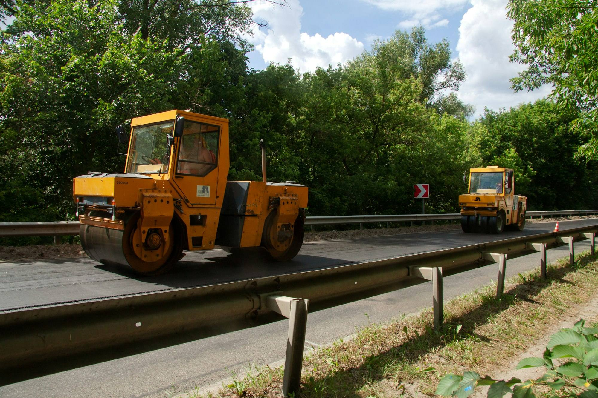
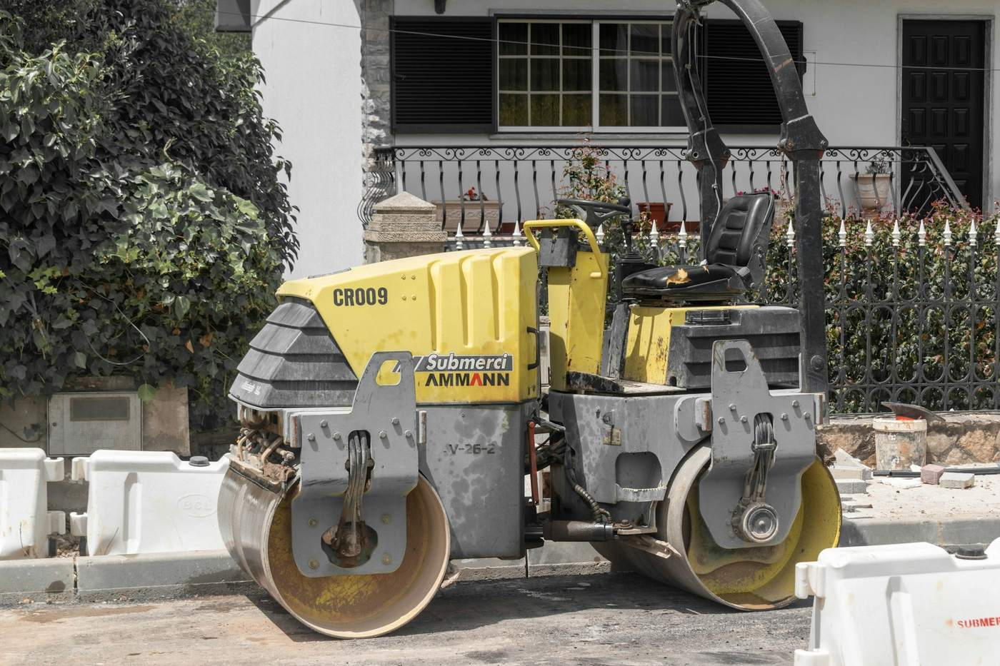
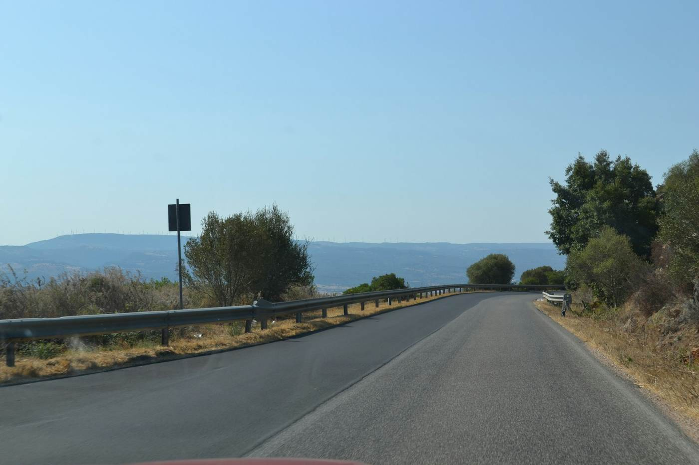
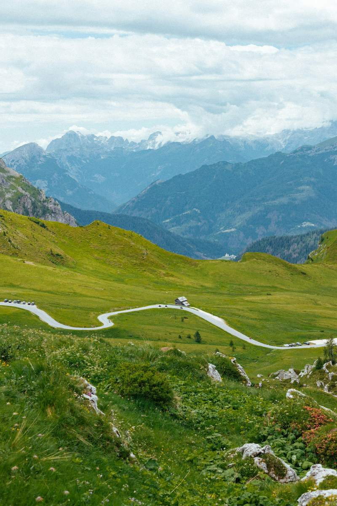

Villa Vergano, Galbiate (LC) · dal 2004
Strade e scavi in provincia di Lecco.
Costruiamo e rifacciamo strade, prepariamo i cantieri e lavoriamo su acquedotti e fognature, per comuni, enti e privati.
01 · Lavori
Quello che serve sotto e sopra la strada.
Un’impresa stradale di Galbiate che lavora per comuni, gestori di servizi e committenti privati in Lombardia, soprattutto in provincia di Lecco.
-
01
Costruzione e rifacimento di strade
Fondazioni stradali, stesa dell’asfalto e rifacimento dei tappeti d’usura su strade comunali, accessi e piazzali.
-
02
Scavi e preparazione del cantiere
Scavi, movimento terra e sistemazione dell’area prima delle opere, come da attività registrata dell’impresa.
-
03
Reti di acquedotto e fognatura
Nel 2019 l’impresa è entrata nel raggruppamento incaricato della manutenzione delle reti idriche della provincia di Lecco.
-
04
Opere per enti pubblici e privati
Lavori su appalto per amministrazioni e gestori di servizi, e cantieri per aziende, condomini e privati.
02 · La sezione
Una strada si costruisce dal basso.
- Scavo e piano di posaSi toglie il terreno vegetale e si compatta il fondo su cui poggerà tutto il resto.
- FondazioneMisto granulare steso a strati e rullato: è la parte che porta il peso dei mezzi.
- Strato di baseIl primo strato legato, più grosso, che distribuisce i carichi sulla fondazione.
- BinderLo strato di collegamento tra la base e la superficie.
- Tappeto d’usuraLa superficie su cui si cammina e si guida: chiusa, regolare, drenante dove serve.
- Segnaletica e consegnaLinee, bordi e pulizia dell’area: la strada torna aperta al traffico.
03 · Cantieri
Asfalto, scavi, reti.
Foto di esempio del mestiere: qui vanno le foto dei vostri cantieri.



04 · L’impresa
Una squadra di Galbiate, al lavoro dal 2004.
Edil Lario Cad è una S.r.l. con sede in Via Provinciale per Colle Brianza, a Villa Vergano. È iscritta alla Camera di Commercio di Lecco dal 2004 e oggi conta 16 persone.
Lavora soprattutto su appalto pubblico: dal 2012 ha vinto 35 gare, e molte altre le ha corse in raggruppamento con imprese del territorio. Nel 2019 è entrata, con altre imprese lecchesi, nel gruppo che cura la manutenzione di acquedotti e fognature della provincia.
“Impresa seria e lavori eseguiti davvero bene. Organizzazione al top.”
Una recensione su Google
“Ottima azienda professionale nel suo lavoro e personale cortese e disponibile a ogni esigenza.”
Un’altra recensione su Google
05 · Come si parte
Dal sopralluogo alla strada aperta.
- 1
Sopralluogo
Veniamo a vedere il tratto, l’accesso e il terreno.
- 2
Preventivo
Un preventivo scritto con le lavorazioni e i tempi.
- 3
Cantiere
Area segnalata, mezzi e squadra, avanzamento concordato.
- 4
Consegna
Pulizia, segnaletica e riapertura del tratto.
06 · Contatti
Avete un tratto da rifare o un cantiere da preparare?
Chiamate l’ufficio o scriveteci due righe: vi richiamiamo per fissare il sopralluogo.
039 531 0722Via Provinciale per Colle Brianza 44
23851 Villa Vergano, Galbiate (LC)